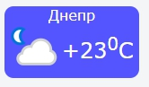

Доработать игру "крестики-нолики" из предыдущего домашнего задания: вынести логику копьютерного противника в отдельный модуль. Добавить AI эмуляцию длительных вычислений (возвращать результат через 2 секунды, использовать промисы).
Написать генератор виджетов. При входе на страничку на сайте пользователь имеет возможность выбрать город (в selecte три города: Днепр, Киев и Львов) и стиль виджета (три произвольные цветовые гаммы). Пользователю возвращается код для вставки на его страницу, при вставке кода на его месте отображается виджет текущей погоды в выбранном городе и с выбранным стилем. Например, такой: 
Погоду получать ajax-запросом с сайта https://www.apixu.com (нужно получить бесплатный API-ключ после регистрации), завернутым в промис. Кэшировать результаты погоды на клиенте на 10 минут, используя куки.